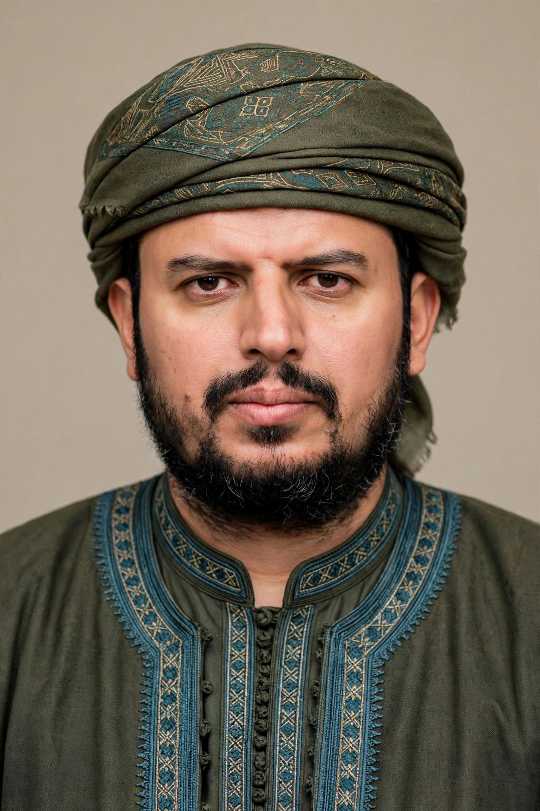

Abdul-Malik al-Houthi

| Born | 22 May 1979, Saada Governorate, North Yemen |
|---|---|
| Known for | Leader of the Houthi movement (Ansar Allah) |
| Predecessor | Hussein al-Houthi |
| Religion | Zaydi Shia Islam |
Abdul-Malik Badruldeen Mohammed al-Houthi (born 22 May 1979) is a Yemeni politician and religious leader who has served as the leader of the Houthi movement (Ansar Allah) since 2004, following the death of his brother Hussein al-Houthi in the first of the Saada wars against the Yemeni government. Under his leadership, the movement seized the capital Sanaa in 2014, triggering the ongoing Yemeni civil war.
Early life
Al-Houthi was born in Saada Governorate in northern Yemen into a prominent Zaydi religious family. His father, Badruldeen al-Houthi, was a leading Zaydi scholar. He received a religious education and had limited formal schooling.
Leadership
After Hussein al-Houthi founded the Believing Youth movement and was killed by Yemeni forces in September 2004, Abdul-Malik assumed command of the armed movement. He has led the Houthis through successive wars, the 2014 takeover of Sanaa, and the Saudi-led intervention that began in 2015. Known for lengthy televised speeches delivered from undisclosed locations, he rarely appears in public. Under his leadership the Houthis launched missile and drone attacks on Saudi Arabia and the UAE, and from late 2023 attacked shipping in the Red Sea in stated solidarity with Palestinians during the Gaza war, drawing US and British airstrikes on Yemen.
Designations
Al-Houthi has been sanctioned and designated by the United States and other governments in connection with the movement's role in the conflict.